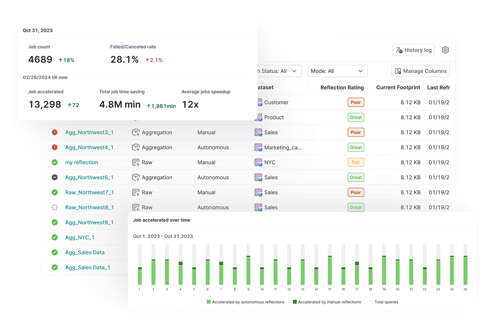
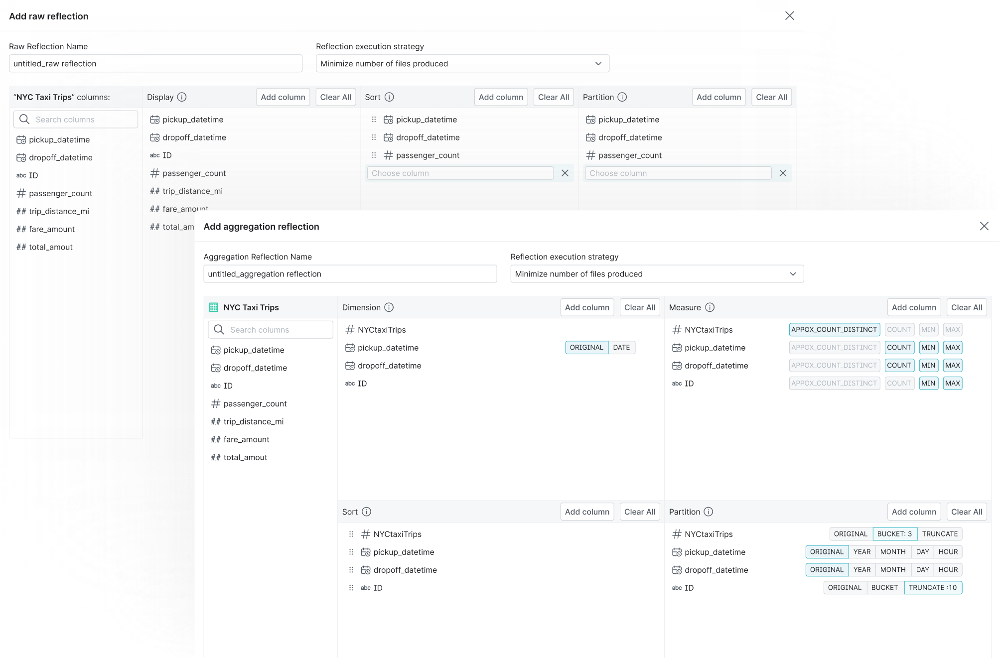

Autonomous Reflections
Making performance tuning invisible by automatically optimizing queries.
I designed a system that automatically improves query performance by analyzing how users query their data. The goal was simple: users should get faster queries without manually configuring reflections.
The Result
Real Performance Gains in Production
This system is now running in production and delivering measurable value.
Time Recovered
Each project saves about 4 hours of query runtime every week by automatically accelerating common queries.
Seamless Adoption
Existing users moved from manual reflection setup to automation without changing their workflow.
Operational Efficiency
Teams no longer need to monitor slow queries or tune reflections manually. The system handles optimization in the background.

The rest of this case study is password protected
Enter the password to read the full process.
Incorrect password. Try again.
The Friction
Breaking the Expertise Bottleneck
Reflections can greatly improve query performance, but configuring them is difficult.
Users need to decide:
- which datasets to optimize
- which fields to include
- how reflections should evolve over time
Most users do not have the expertise to make these decisions. Many teams rely on experts to configure reflections, while others avoid using them.
| Reflections | MVs | Indexes | |
|---|---|---|---|
| Stores precomputed data for fast read access | |||
| Stored as attribute of existing objects (Tables/Views) | |||
| Transparently used in queries without modification | |||
| Simplify query plans and reduce planning time |
The Real Challenge
The Trust Gap
Users are often hesitant to let an automated system modify their data infrastructure.
Because reflections directly affect query execution, teams want to understand what changes are happening and why before allowing the system to operate automatically.
Without addressing this trust gap, full automation would be difficult to adopt.
How might we improve query performance without asking users to configure reflections at all?

*Some explorations of prettier UI. Abandoned, of course.
The Strategy
From Manual Configuration to Autonomous Optimization
Behavior-Driven Optimization
The system analyzes query history to understand how users access their data.
By detecting frequently queried entities and fields, it can determine where reflections will have the biggest impact.
This allows the platform to continuously optimize itself based on real usage patterns.
A Path to Automation
To make automation easier to adopt, I designed two modes.
Recommendation Mode
The system suggests reflections based on query history. Users can review and apply them with one click.
Autonomous Mode
Once users trust the system, they can enable full automation. Reflections are then created and maintained automatically.
Show recommendations with the expected impact of each reflection to encourage users to enable them.
Showing the Impact
Automation only works if users can see what it is doing.
I designed dashboards that show which reflections were created and how query performance improved over time. This helps users understand the value and build trust in the system.
The Impact
Designing for Automation
Nearly 70% of cloud customers wanted to adopt the feature right after announcement. We turned a task that took experts weeks into something that runs in the background. Teams without dedicated performance engineers now get query acceleration on par with companies that invest heavily in manual tuning.
What I Took Away
The biggest challenge was not the technology. It was helping users trust automation.
By creating a clear path from recommendations to full automation, we turned reflections from a complex expert feature into a system that optimizes itself.
What's Next
We're making refreshes more efficient and reducing resource costs for large-scale deployments. The team is also expanding support for additional file formats beyond Iceberg and JSON.